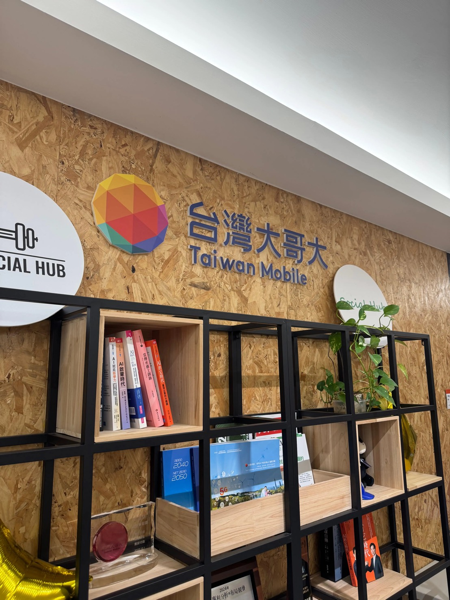
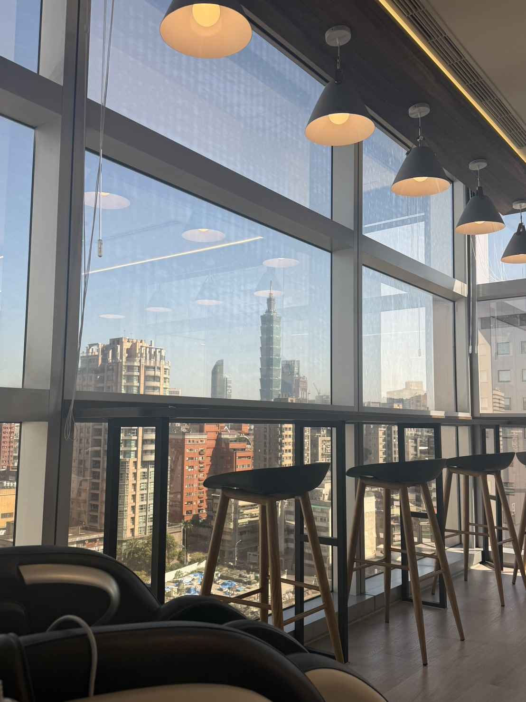

公司介紹
台灣大哥大成立於1997年，為台灣主要電信業者之一，隸屬富邦集團，長期位居台灣電信產業前三大，是台灣數位匯流與電信服務的領航企業。
主要業務涵蓋行動通訊、固網寬頻、有線電視及數位內容服務，近年以「超5G策略」為核心，積極整合大數據、人工智慧與物聯網技術，佈局企業雲端、資安及智慧物聯網等數位轉型解決方案，致力轉型為新世代科技電信公司。
願景
成為新世代數位匯流與科技電信的領航企業。
使命
以超5G策略整合AI、大數據與IoT，為消費者與企業客戶創造全方位數位體驗。
價值觀
以科技創新驅動永續經營，秉持誠信、開放與客戶至上的精神。
產品服務
行動通訊、寬頻上網、數位影音串流（myVideo）、momo購物及企業ICT整合服務。
網路暨技術群
負責全台行動網路基站建設、維運及5G網路技術演進。
企業用戶事業群
為企業客戶提供雲端、資安、ICT整合及智慧城市等解決方案。
資料分析技術處——創新應用開發部
探索全球前沿技術並評估引入企業內部之可行性，工作範疇涵蓋生成式AI應用開發、大型語言模型（LLM）微調、多模態感知技術以及資安科技防詐。

